Overview of Support Vector Machine (SVM) and Ensemble Learning
Acknowledgement: This course (CSCI 5523) is being offered by Prof. Vipin Kumar at the University of Minnesota in Fall 2020.
Support Vector Machines
We will start by looking at this image and think about which decision boundary is better? B1 or B2?
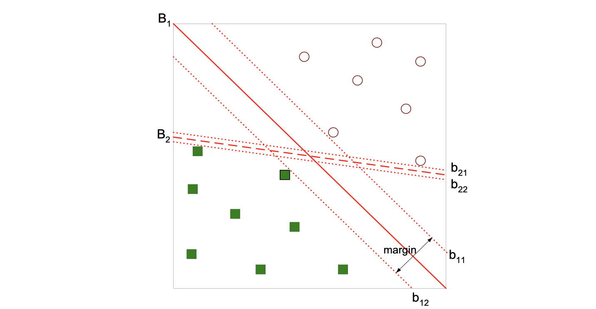
If we find the hyperplace maximizes the margin as the image does, then we can tell B1 is better than B2, which means if we have one more record B1 is more likely to correctly classify the new record.
Linear SVM
Learning the model is equaivalent to determining the values of and
, and our objective is to maximize:
, which is equivalent to minimizing:
. And this is a constrained optimization problem.
What if the problem is not linearly separable like the image following?
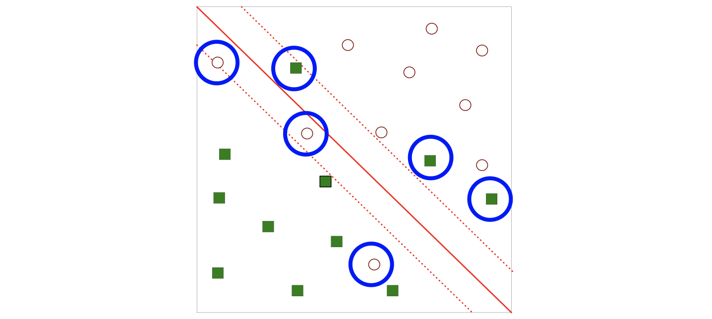
The notion is the same, we’re still utilizing the idea of margin, but we want to add some adjustment to some errors. Then we introduce slack variables.
We need to minimize:
subject to:
It turns out that we can actually also use this version in some data set which is separable.
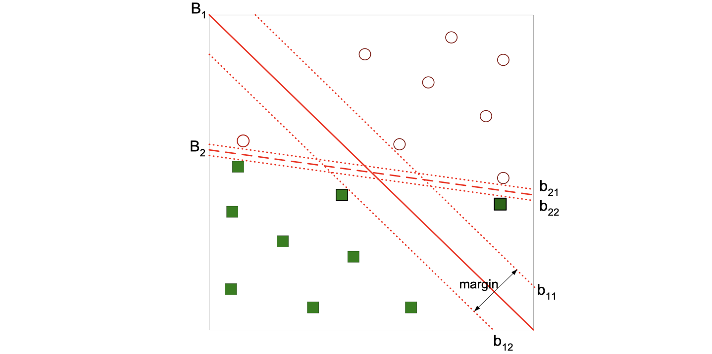
There is a trade-off here. B1 has a wider margin but also has a record misclassififed (error), while B2 has no errors but with a narrower margin. We can’t tell which one is performaning better because it’s relevant to the specific question, but using the validation set will always give us an answer.
Nonlinear SVM
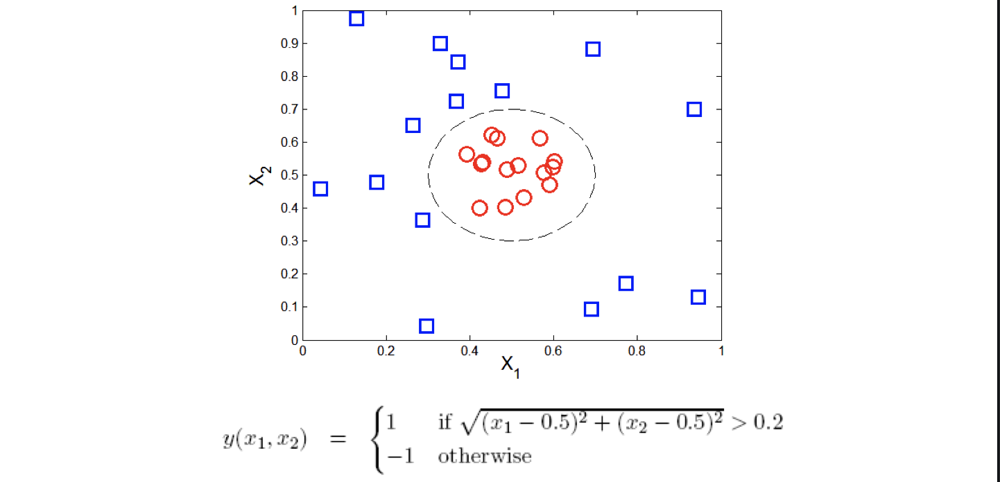
We can try to transform the data into higher dimensional space:
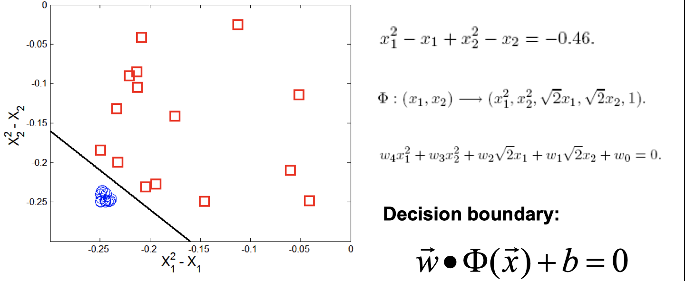
Since this is an intro class, we didn’t go into details of this nonliear example.
Kernel Trick
is a kernal function (expressed in terms of the coordinates in the original space)
Examples:
Advantages of using kernel:
- Don’t have to know the mapping function
- Computing dot product
in the original space avoids curse of dimensionality
Not all functions can be kernels:
- Must make sure there is a corresponding
in some high-dimensional space
- Mercer’s theorem
Characteristics of SVM
-
The learning problem is formulated as a convex optimization problem
- Efficient algorithms are avaiable to find the global minima
- Many of the other methods use greedy approaches and find locally optimal solutions
- High computational complexity for building the model
-
Robust to noise
-
Overfitting is handled by maximizing the margin of the decision boundary
-
SVM can handle irrelevant and redundant better than many other techniques
-
The user needs to provide the type of kernel function and cost function
-
Difficult to handle missing values
Ensemble Methods
- Constrct a set of base classifiers leanred from the training data
- Predict class label of test records by combining the predictions made by multiple classifiers (e.g., by taking majority vote)
Why does ensemble methods work?
Suppose there are 25 base classifiers
- Each classifier has error rate,
- Majority vote of classifiers used for classification
- If all classifiers are identical, then error rate of ensemble =
- If all classifiers are independent (errors are uncorrelated): Error rate of ensemble = probability of having more than half of base classifiers being wrong
Necessary conditions for ensemble methods
Ensemble methods work better than a single base classifier if:
- All base classifiers are independent of each other
- All base classifiers perform better than random guessing (error rate < 0.5 for binary classification)
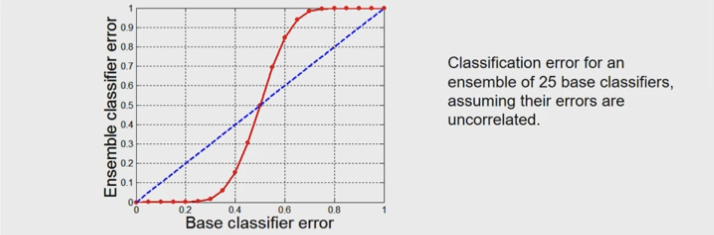
Rationale for ensemble learning
Ensemble methods work best with unstable base classifiers
- Classifiers that are sensitive to minor perturbations in training set, due to high model complexity (e.g., a little change of records may end up with a different model)
- Examples: Unpruned decision trees, ANNs, …
- Low Bias in finding optimal decision boundary
- High variance for minor changes in training set or model selection procedure
Bias-Variance Decomposition
Analogous problem of reaching a target y by firing projectiles from x (regression problem):
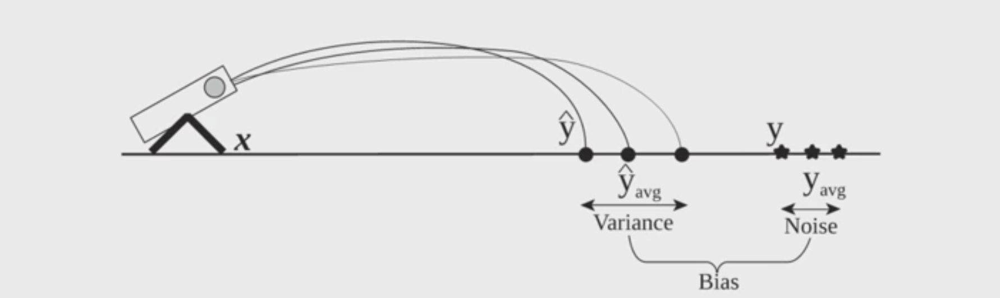
On the right side of the image, those stars are actual values of y, while those dots on the left are predict values of y, and the difference between of their averages is the Bias.
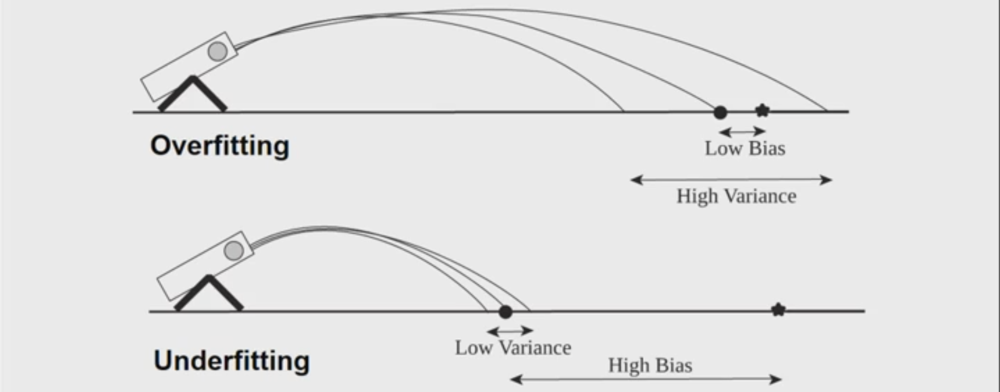
Both of the situation above are bad. Ensemble methods try to reduce the variance of complex models (with low bias) by aggregating responses of multiple base classfiers.
A visual for ensemble learning:
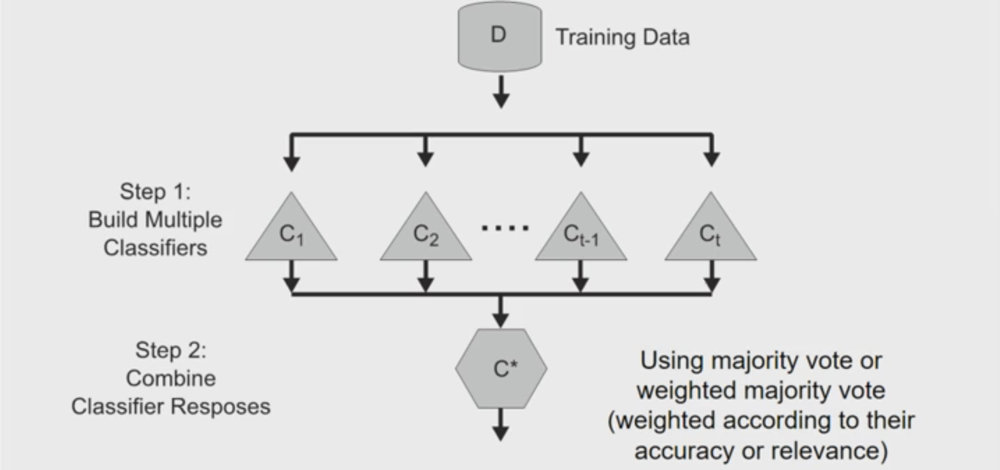
Constructing ensemble classifiers
- By manipulating training set (e.g., bagging, boosting)
- By manipulating input features (e.g., random forests)
- By manipulating class labels (e.g., error-correcting output coding)
- By manipulating learning algorithm (e.g., injecting randomness in ANN or decision tree)
Bagging (Bootstrap AGGregatING)
- Bootstrap sampling: sampling with replacement
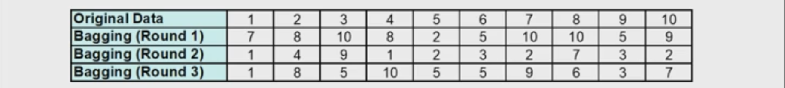
You can do different round of bagging, and each data is equally probability to be selected. - Build classifier on each bootstrap sample
- Probability of a training instance being selected in a bootstrap sample is:
(n: number of training instances)
- ~0.632 when n is large
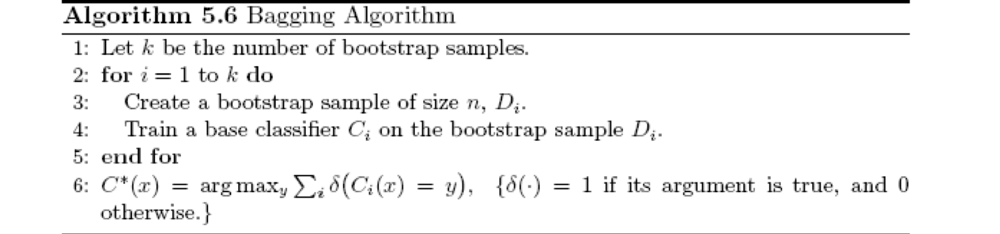
Boosting
An iterative procedure to adaptively change distribution of training data by focusing more on previously misclassified records
- Initially, all N records are assigned equal weights (for being selected for training)
- Records that are wrongly classified will have their weights increased in the next round
- Records that are classified correctly wil have their weights decreased in the next round
- Unlike bagging, weights may change at the end of each boosting round
e.g., AdaBoost
Random Forest Algorithm
Construct an ensemble of decision trees by manipulating training set as well as features
- Use bootstrap sample to train every decision tree (similiar to Bagging)
- Use the following tree induction algorithm:
- At every internal node of decision tree, randomly sample p attributes for selecting split criterion
- Repeat this procedure until all leaves are pure (unpruned tree)
Characterstics of Random Forest
- Base classifiers are unpruned trees and hence are unstable classifiers
- Base classifers are decorrelated (due to randomization in training set as well as features)
- Random forests reduce variance of unstable classifiers without negatively impacting the bias
- Selection of hyper-parameter p
- Small value ensures lack of correlation
- High value promotes strong base classifiers
- Common default choice